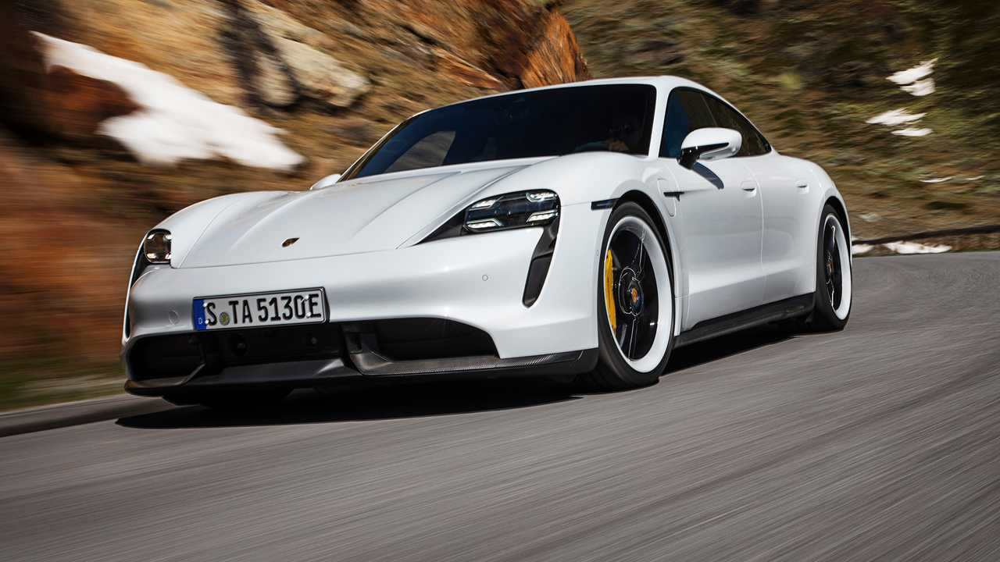

Família Taycan · Versão 2019–2023
Taycan Turbo S.
Uma nova forma de sentir a performance. A identidade esportiva da Porsche em uma experiência de condução totalmente elétrica.
Explorar os detalhes ↓Performance elétrica
Outra energia. A mesma paixão.
- Potência em overboost
- 761 cv
- 0 a 100 km/h
- 2,8 s
- Velocidade máxima
- 260 km/h
Dados da versão anterior à atualização de 2024. Até 761 cv em overboost com Launch Control. Aceleração com Launch Control.
Uma nova perspectiva
Elétrico na essência. Porsche na atitude.
O Taycan Turbo S utiliza dois motores elétricos, um em cada eixo, e tração integral. Com Launch Control, a potência em overboost chega a 761 cv para a aceleração de partida.
No eixo traseiro, uma transmissão de duas marchas combina a força na arrancada com o desempenho em velocidades mais altas. Uma solução que mostra como a engenharia elétrica também pode ter personalidade esportiva.
Ver carrinho →| Motorização | Totalmente elétrica |
|---|---|
| Motores | Dois, um em cada eixo |
| Tração | Integral |
| Overboost | Até 761 cv com Launch Control |
| Transmissão traseira | 2 marchas |
| 0 a 100 km/h | 2,8 s com Launch Control |
| Velocidade máxima | 260 km/h |